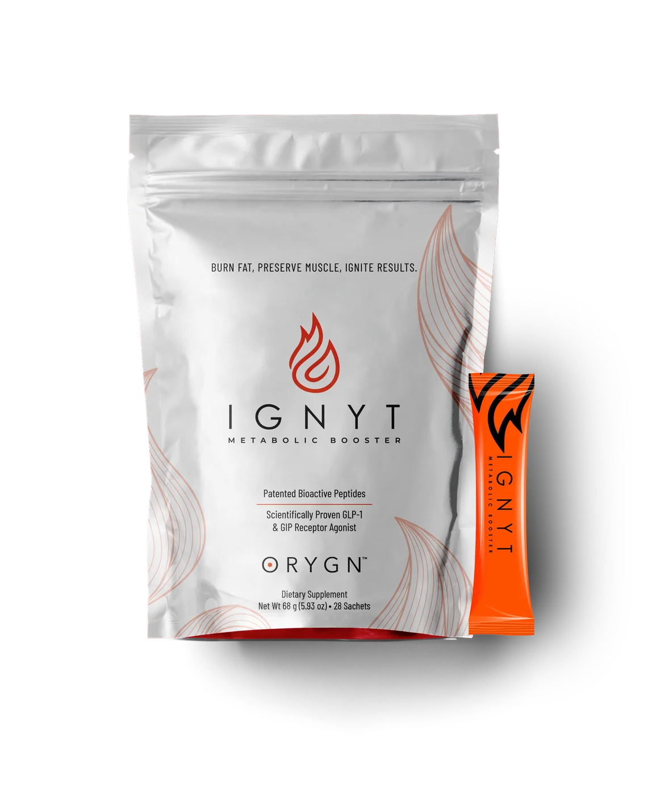
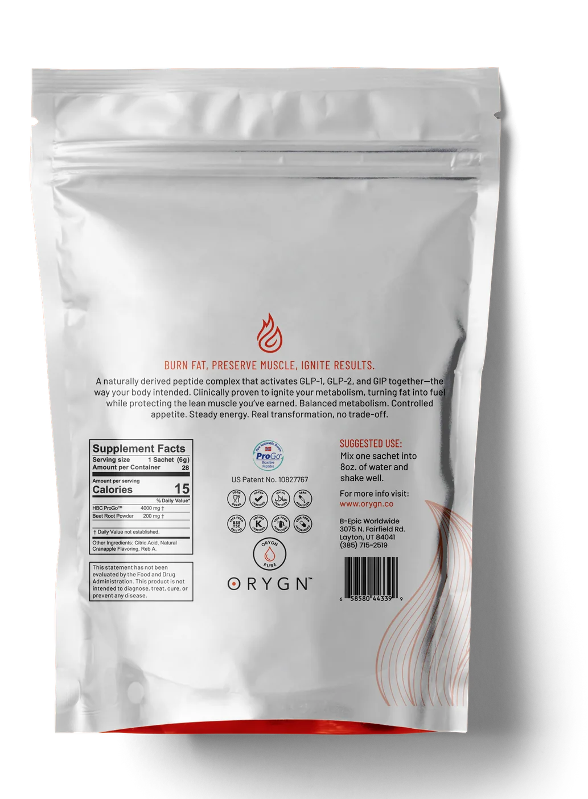

Ingredient
Was the same salmon-peptide ingredient tested?
ORYGN IGNYT Metabolic Booster
IGNYT is ORYGN's powdered format made with salmon-derived bioactive peptides. Learn what the pack is, how the current label says to prepare it and how to read the supporting research.

At a glance

Current label
The pictured ORYGN label directs users to mix one sachet into 8 ounces—about 240 ml—of water and shake well.
ORYGN's online page and its product imagery currently show different pack counts. For that reason, this guide does not promise a fixed number of sachets. Confirm the quantity and directions on the pack supplied with your order.
Evidence context
ORYGN links IGNYT to research concerning ProGo and other salmon-derived bioactive peptides. That evidence can explain why the ingredient is of interest, but it does not automatically prove a particular outcome from the finished sachet at its marketed dose.
Was the same salmon-peptide ingredient tested?
Did the study use a comparable amount and delivery format?
Was it a customer outcome, a biomarker or only a proposed mechanism?
Choose your format
| Feature | IGNYT | triGLP |
|---|---|---|
| Format | Powdered sachet mixed with water. | Liquid drops used under the tongue. |
| Routine | A prepared drink. | A small drop format. |
| Which is better? | The published information does not establish that one format is better for everyone. Choose using the current label, personal suitability and the routine you prefer. | |